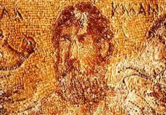

Давньогрецький поет другої половини VII століття до н. е., представник хорової лірики.
Алкман жив і працював у Спарті в період після 2-ї Мессенської війни. В античності існувала традиція, згідно якої хоча він і народився в Месі, однак походив від батьків-рабів родом із Сард у Лідії. Алкман — представник хорової лірики. У Спарті він був керівником хорів, для яких складав мелодії, складав слова і розробляв танцювальні рухи під пісню; Алкман — перший відомий за збереженими фрагментами грецький поет, що писав пісні для хору.
Корпус творів Алкмана, зібраний олександрійськими філологами, становив 6 книг. Щонайменше дві з них містили парфении, які принесли поетові найбільше визнання. Парфеній являє собою різновид хорової мелики; це "дівоча пісня", призначена для виконання хором дівчат. (Дівочі хори були широко поширені в Спарті, де особливо шанувалися Аполлон і богиня-діва Артеміда.) Парфеній відрізнявся від гипохермы відсутністю експресивної міміки і швидкого танцю, був ближче до урочисто-процесуальним просодию, від якого відрізнявся більшою граціозністю. Один з них, і найкраще збережений (сім строф по 14 віршів, приблизно дві третини або навіть три чверті від цілого тексту), був знайдений зовсім недавно, в 1855 р., на папірусі. Цей парфеній був написаний до вшанування Артеміди Орфії. Текст пісні складається з декількох окремих частин, пов'язаних між собою формулами, що позначають кінець одного і початок іншого сюжету; уславлення давніх героїв Спарти (братів Діоскурів, Кастора і Полідевка, потім синів Гиппокоонта, убитих Гераклом), роздуми про "могутність богів і тлінність людського життя", що випливають із цього моральні приписи; далі — прославлення самого хору, який виконував парфеній, і його окремих учасниць, які виконували танець. (Прославлення в гімні простих людей поряд з богами та героями є досить важливим нововведенням, що свідчить про прогрес світської поезії, що виникла в надрах релігійної пісенної культури.) Інтонація збереженій частині парфенія камерна, вільна; опис дівчат витончено і делікатно (і не позбавлене гумористичних нот). Взагалі, ні в одному відомому фрагменті текстів Алкмана немає характерної для Спарти строгості; легкі і рухливі навіть розміри, якими користується поет. Алкман писав також пеаны (гімни богам; Зевсу Пифийскому, Кастору і Полідевкові, Гері, Аполлону, Артеміді, Афродіті), гипофегматы (танцювальні пісні), еротики (любовні пісні), эпиталамии (весільні пісні), сколії (застільні пісні). Фрагменти, що збереглися від текстів Алкмана, відрізняє така ж невимушеність, характерна для того випадку, коли автор "не піклується про своє становище і про думку критики". Алкман тонко відчував природу; він створював прекрасні метафори, називаючи, наприклад, морську піну "квіткою хвилі", а порослі лісом гори — "грудьми темної ночі". Теми лірики Алкмана різноманітні; він звертається до Музам з проханням "зачати чарівну пісню" і "запалити вражаючою пристрастю" гімн, вказуючи, що свою мелодію і слова він запозичив у куріпок ("Знаю всі наспіви я пташині…"). Він перестерігає своє серце берегтися Ерота, який "скажений дуріє, як хлопчик", і "милістю Кіпріди сходить знову, зігріваючи серце". Йому належить перша в своєму роді картина тиші вечора (оспівана пізніше Гете, вірш. "Uber alien Gipfein ist Ruh", і Лермонтовим, вірш. "Гірські вершини"); надзвичайно відомий фрагмент, у наш час названий "ноктюрном", який "в влучних, привабливих віршах" описує глибокий спокій природи, коли на світ опустилася ніч. Вже будучи старим, він в граціозних віршах звертається до "милим дів", "співачкам прелестноголосым". Еротики Алкмана в давнину високо цінувалися. Такому поетичному настрою у Алкмана в той же час супроводжує справжній натуралізм, коли він хвалить свою просту їжу і заявляє про неможливість наїстися досита. Алкман цінує "залізний меч не вище прекрасної гри на кіфарі"; буває, не далекий від песимізму: "І нитка тонка, і жорстока Ананке!" (Ананке — богиня необхідності). Завдяки багатству метрики, Алкман став зразком для пізніших поетів; його метричні нововведення дуже важливі; він вживає не тільки всі метри, які використовувалися до нього — гекзаметр, ямб, трохей, амфимакр (довгий, короткий, довгий) — але ще й бакхий (короткий і два довгих). Алкман вважається творцем т. н. Алкмановой строфи, яку використовує напр. Горацій. Алкмана вважають одним з "полагателей" поезії як такої — він обробив і зафіксував імпровізовані пісні, що відбуваються з давньої музично-танцювальної традиції, тобто "овеществлял" процеси трансформації культури музично-танцювальної в культуру власне поетичну. У Спарті, де протягом кількох століть він був глибоко шануємо, йому поставили пам'ятник. Його шанували і старанно читали александрійські вчені і поети, відвівши йому почесне місце серед 9 канонічних ліриків.